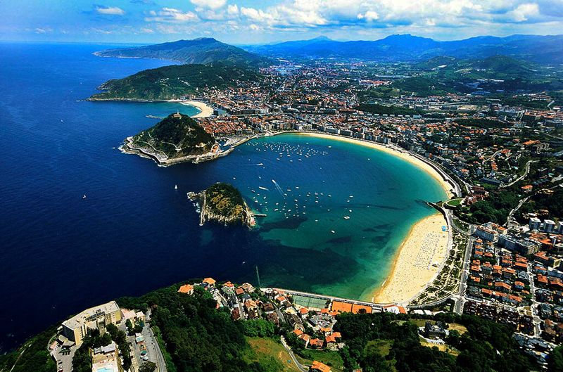
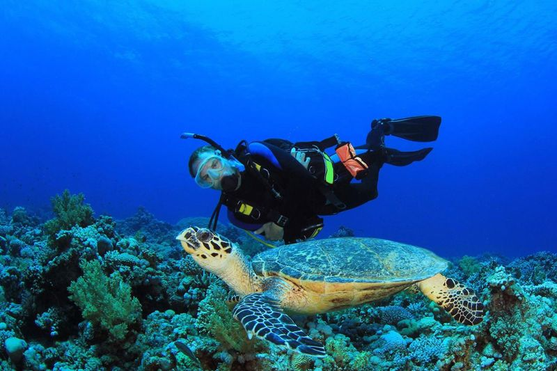
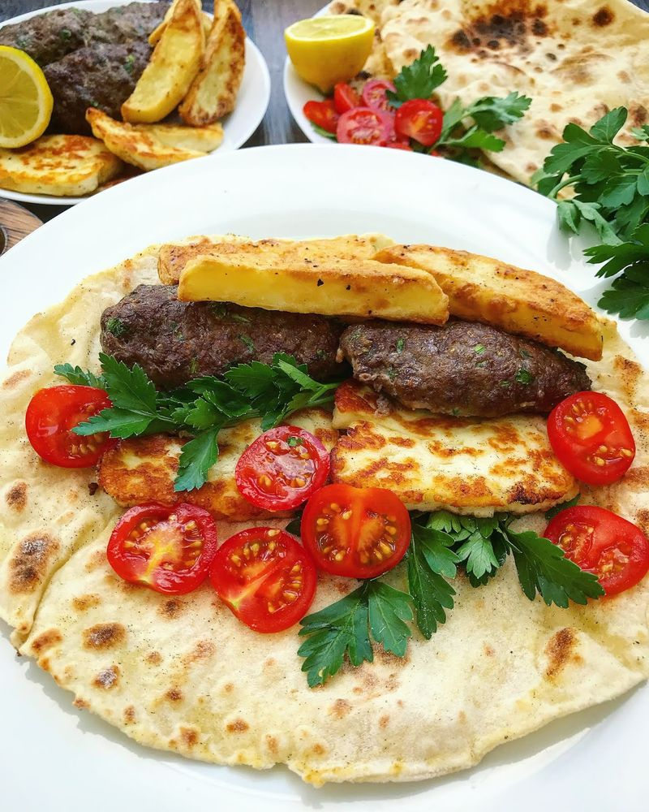

KKTC'de Yaşam
Akdeniz'in incisinde huzurlu bir hayat — 300 günlük güneş, tarihi miras ve sonsuz fırsatlar
KKTC hakkında temel bilgiler
Yüzölçümü
3.355 km² yüzölçümüyle adanın kuzey üçte biri
Nüfus
~489.308 kişi (2024 tahmini). Başkent Lefkoşa: ~108.000
Para Birimi
Türk Lirası (TL). Euro, Dolar ve Sterlin de yaygın
İklim
Akdeniz iklimi. Yılın 300+ günü güneşli, ort. 19°C
Şehirler ve tarihi miras
İklim ve doğa
Tipik Akdeniz iklimi: Yazlar sıcak (40°C'ye kadar), kışlar ılık (5-15°C). Yılın 300 günü güneşli, ortalama yağış 500 mm.
Bitki örtüsü çam, servi, zeytin ağaçları ve endemik orkideleri kapsar. Kuş göç yolları üzerinde bulunur.

Aktiviteler ve gece hayatı
Yılın 9 ayı denize girilebilen KKTC'de su sporları, doğa yürüyüşleri ve kültürel etkinlikler sizi bekliyor.


Mutfak ve kültür
Doğu-Batı sentezi bir mutfak: Hellim, şeftali kebabı, molehiya, kolokas ve taze deniz ürünleri. Organik malzemeler köylerden gelir.
Kültürel zenginlik: Yunan, Mısır ve Osmanlı uygarlıklarının harmanı. Misafirperver halk ve yüksek okuryazarlık oranı.
Yaşam maliyetleri
KKTC'de yaşam oldukça uygun fiyatlı
Kira
10.000 - 20.000 TL/ay
Market
5.000 - 10.000 TL/ay
Yeme-İçme
Restoranlar uygun fiyatlı
Ulaşım
Uygun taksi ve araç kiralama
Neden KKTC'de yaşamalısınız?
Güvenli, uygun fiyatlı ve huzurlu bir yaşam için ideal destinasyon.
Güvenlik
Düşük suç oranı ve dostane toplum yapısı ile huzurlu bir yaşam.
Eğitim
Uluslararası üniversiteler ve kaliteli eğitim fırsatları.
İş Fırsatları
Turizm, eğitim, inşaat ve hizmet sektörlerinde geniş iş imkânları.
KKTC'ye Taşınmak mı İstiyorsunuz?
Çalışma izni, oturma izni ve öğrenci vizesi süreçlerinde yanınızdayız. Dev/Soy Danışmanlık ile KKTC'de yeni bir başlangıç yapın!